Rendered 3D simulation of a human operating household devices. One recorded run per task, filmed by three synchronized cameras; the pressed keys move by simulated contact (MuJoCo), the rest of the motion is authored and solved by IK. Each device has its own page with the task videos.
5devices
50tasks
50/50tasks done
28CPU-verified tasks
22recorded runs
291videos
5scenes
30props
63movable parts
87hand anchors
11action primitives
11grip templates
Devices

Microwave v2 microwave_v2
procedural, this project4 tasks · 4 done · 12 videos · 24 movable parts
cook · defrost · reheat · set_clock

Coffee machine coffee_machine
procedural, this project40 tasks · 40 done · 36 videos · 13 movable parts
coffee_espresso_single · coffee_espresso_double · coffee_bean_to_cup · coffee_ristretto · coffee_lungo · coffee_americano · coffee_long_black · coffee_iced_americano · coffee_latte · coffee_cappuccino · coffee_flat_white · coffee_cortado · coffee_macchiato · coffee_iced_latte · coffee_hot_water_tea · coffee_grind_dial_dose · coffee_dosing_cup · coffee_weigh_tare · coffee_distribute_tamp · coffee_program_shot · coffee_double_wall · coffee_preheat · coffee_purge_group · coffee_purge_wipe_wand · coffee_knock_out_rinse · coffee_empty_tray · coffee_empty_knock_box · coffee_refill_tank · coffee_replace_filter · coffee_backflush · coffee_clean_cycle · coffee_descale · coffee_clean_grinder · coffee_empty_hopper · coffee_wipe_machine · coffee_rinse_jug · coffee_rinse_cup · coffee_start_of_day · coffee_end_of_day · coffee_weekly

Induction range induction_range
procedural, this project4 tasks · 4 done · 12 videos · 19 movable parts
range_bake · range_boil · range_set_clock · range_stockpot

Microwave (RoboCasa) microwave
NVIDIA PhysicalAI MJCF via RoboCasa · CC BY 4.01 tasks · 1 done · 3 videos · 5 movable parts
use

Printer printer
procedural, this project (no manufacturer model)1 tasks · 1 done · 3 videos · 2 movable parts
use
Human and props

Human
MakeHuman CC0 meshes, assembled with MPFB 21.77 m adult · 163 bones · articulated fingers · IK arms, locked feet

bowl
procedural, this project0.35 kg · 4 grasp points

mug
procedural, this project0.3 kg · 1 grasp points

paper stack desk
procedural, this project0.5 kg · 2 grasp points

portafilter
procedural, this project0.45 kg · 1 grasp points

tamper
procedural, this project0.25 kg · 1 grasp points

jug
procedural, this project0.3 kg · 1 grasp points

cup
procedural, this project0.12 kg · 1 grasp points
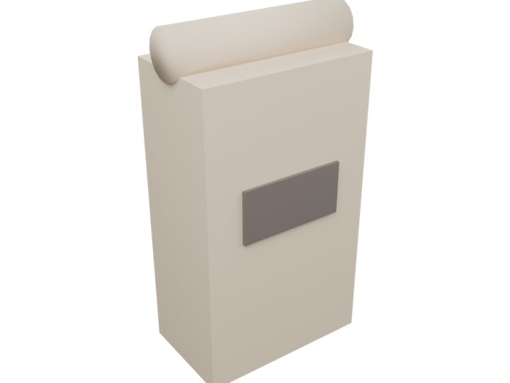
bean bag
procedural, this project0.3 kg · 1 grasp points
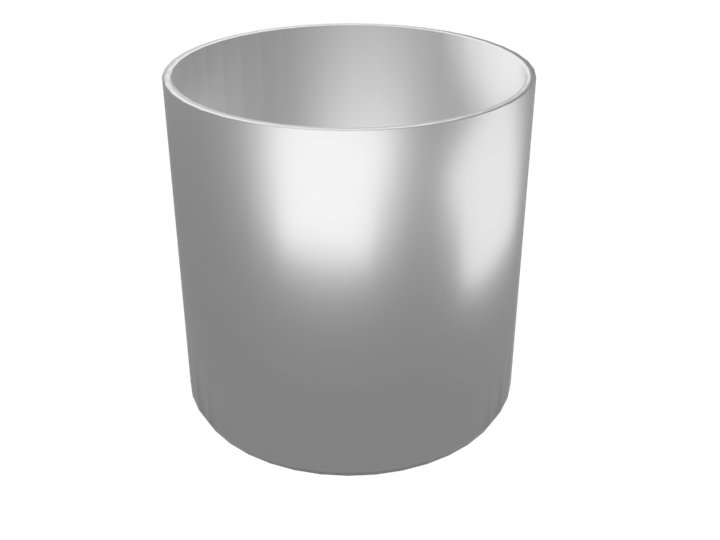
dosing cup
procedural, this project0.12 kg · 1 grasp points
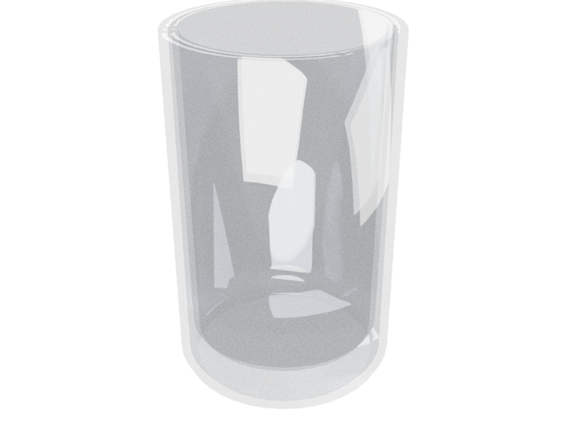
glass
procedural, this project0.25 kg · 1 grasp points
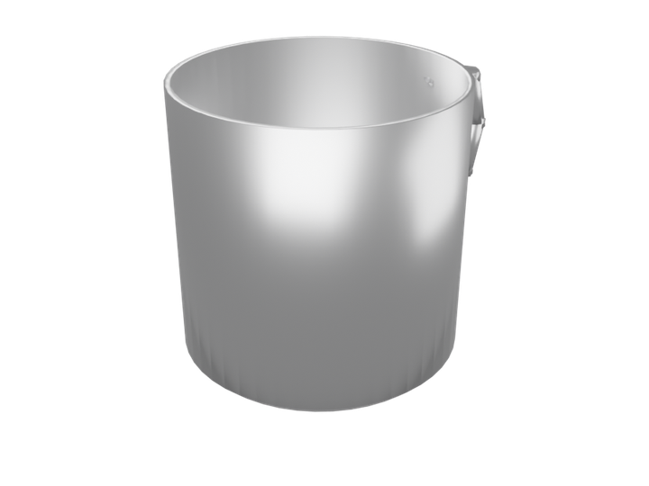
ice bucket
procedural, this project0.6 kg · 1 grasp points
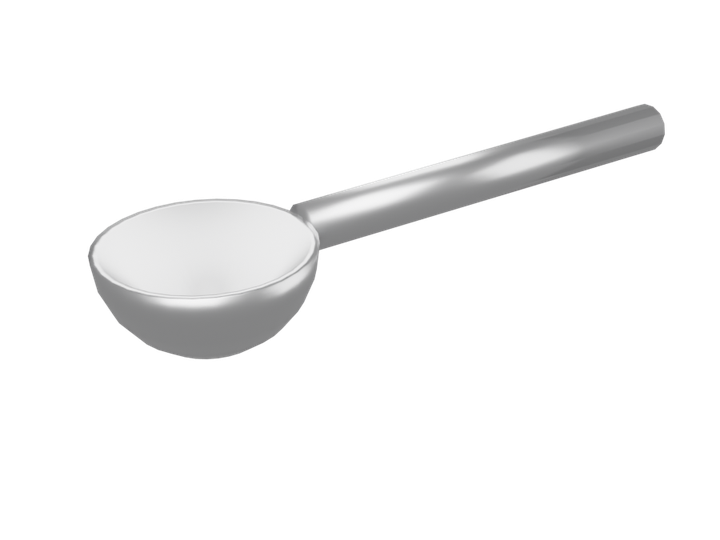
scoop
procedural, this project0.08 kg · 1 grasp points
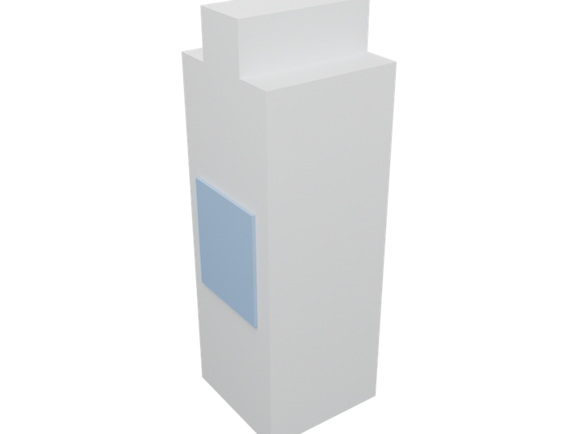
milk carton
procedural, this project1.05 kg · 1 grasp points
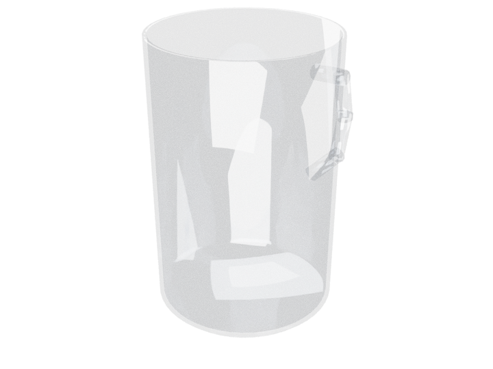
water pitcher
procedural, this project0.55 kg · 1 grasp points
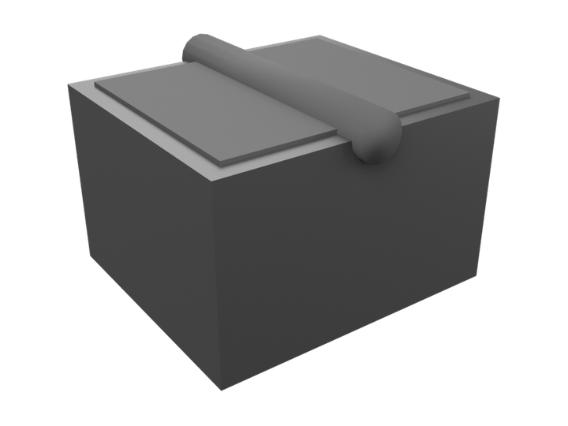
knock box
procedural, this project1.2 kg · 1 grasp points
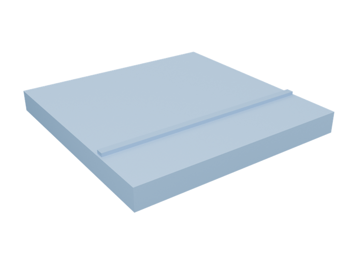
cloth
procedural, this project0.05 kg · 1 grasp points
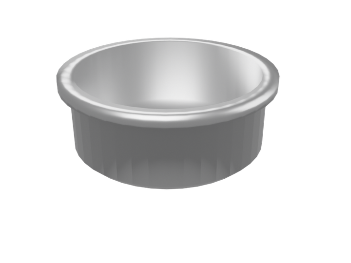
cleaning disc
procedural, this project0.04 kg · 1 grasp points
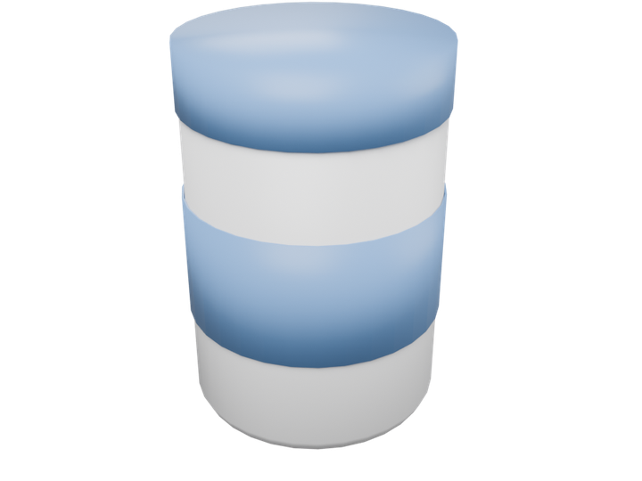
tablet tub
procedural, this project0.12 kg · 1 grasp points
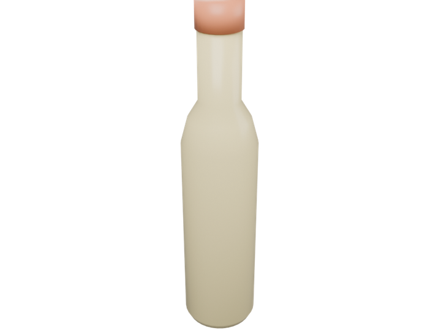
descaler
procedural, this project0.55 kg · 1 grasp points
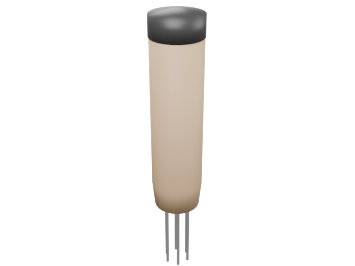
wdt tool
procedural, this project0.03 kg · 1 grasp points
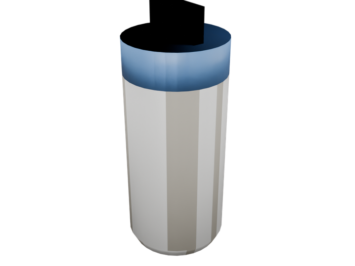
filter cartridge
procedural, this project0.06 kg · 1 grasp points
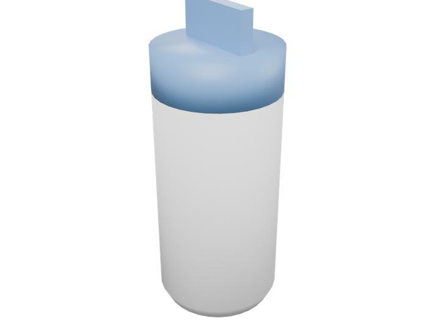
filter cartridge new
procedural, this project0.05 kg · 1 grasp points
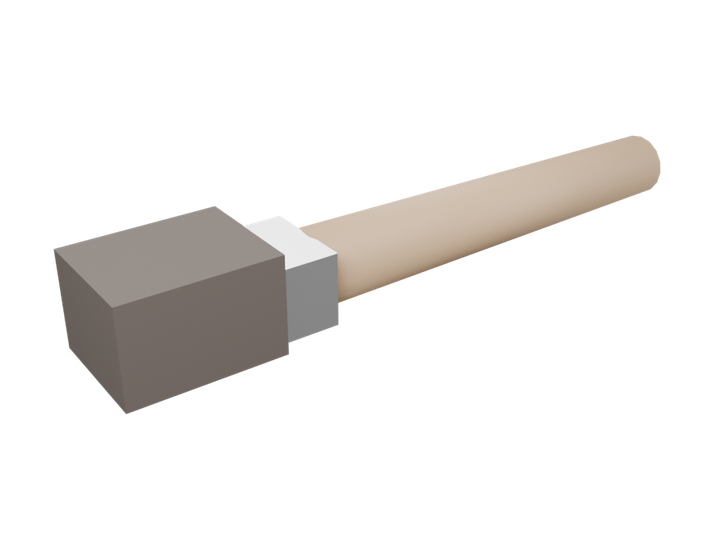
grinder brush
procedural, this project0.03 kg · 1 grasp points
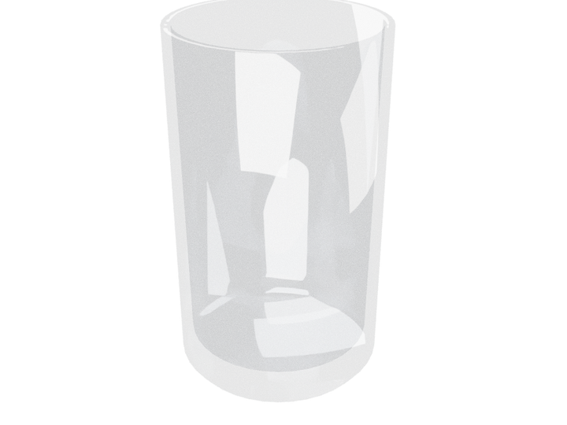
glass cup
procedural, this project0.2 kg · 1 grasp points
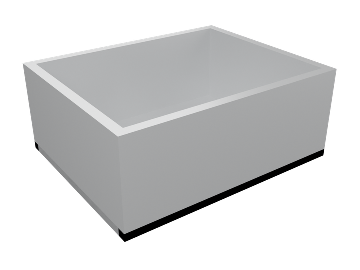
sink
procedural, this project6.0 kg · a place, not graspable
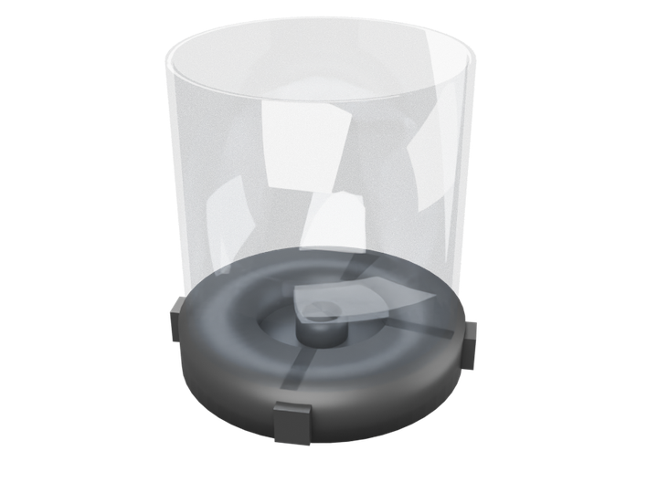
hopper
procedural, this project0.25 kg · 1 grasp points
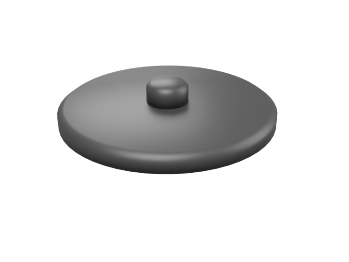
hopper lid
procedural, this project0.05 kg · 1 grasp points
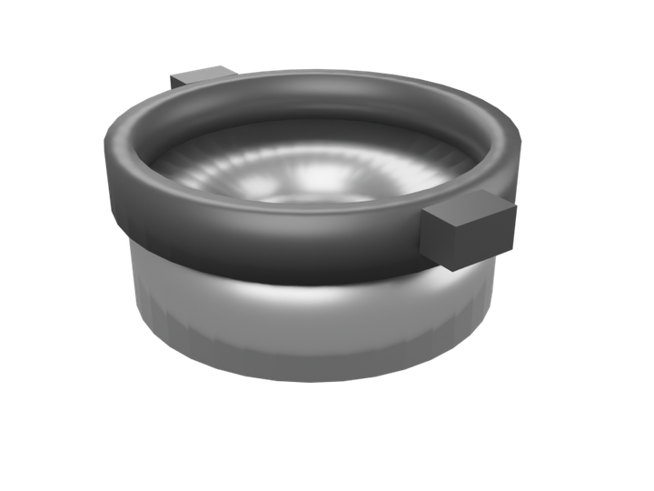
burr
procedural, this project0.08 kg · 1 grasp points

saucepan
procedural, this project0.9 kg · 1 grasp points

stockpot
procedural, this project1.4 kg · 1 grasp points
Scenes
kitchen_coffee_machine
counter 0.9 m · device coffee_machine · props portafilter, tamper, dosing_cup, cup, glass, jug, milk_carton, water_pitcher, sink, ice_bucket, scoop, grinder_brush, wdt_tool, tablet_tub, filter_cartridge_new, knock_box, bean_bag, descaler, glass_cup, hopper, hopper_lid, burr, filter_cartridge, cloth, cleaning_disc · cameras external, ego, detail
kitchen_induction_range
counter 0.94 m · device induction_range · props saucepan, stockpot · cameras external, ego, detail
kitchen_microwave
counter 0.9 m · device microwave · props bowl · cameras external, ego, detail
kitchen_microwave_v2
counter 0.9 m · device microwave_v2 · props bowl, mug · cameras external, ego, detail
office_printer
sideboard 0.95 m · device printer · props paper_stack_desk · cameras external, ego, detail